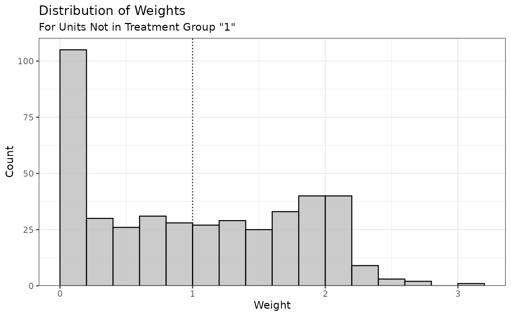

Summarize, Print, and Plot Information about Estimated Weights
Source:R/summary.R
summary.optweight.RdThese functions summarize the weights resulting from a call to optweight(), optweightMV(), or optweight.svy(). summary() produces summary statistics on the distribution of weights, including their range and variability, and the effective sample size of the weighted sample (computing using the formula in McCaffrey, Rudgeway, & Morral, 2004). plot() creates a histogram of the weights.
Usage
# S3 method for class 'optweight'
summary(object, top = 5L, ignore.s.weights = FALSE, weight.range = TRUE, ...)
# S3 method for class 'optweightMV'
summary(object, top = 5L, ignore.s.weights = FALSE, weight.range = TRUE, ...)
# S3 method for class 'optweight.svy'
summary(object, top = 5L, ignore.s.weights = FALSE, weight.range = TRUE, ...)
# S3 method for class 'summary.optweight'
plot(x, ...)Arguments
- object
an
optweight,optweightMV, oroptweight.svyobject; the output of a call tooptweight(),optweightMV(), oroptweight.svy().- top
integer; how many of the largest and smallest weights to display. Default is 5. Ignored whenweight.range = FALSE.- ignore.s.weights
logical
; whether to ignore sampling weights when computing the weight summary. Default isFALSE`.- weight.range
logical; whether to display statistics about the range of weights and the highest and lowest weights for each group. Default isTRUE.- ...
Additional arguments. For
plot(), additional arguments passed tographics::hist()to determine the number of bins, thoughggplot2::geom_histogram()from ggplot2 is actually used to create the plot.- x
a
summary.optweight,summary.optweightMV, orsummary.optweight.svyobject; the output of a call tosummary.optweight(),summary.optweightMV(), or ()summary.optweight.svy.
Value
For point treatments (i.e., optweight objects), summary() returns a summary.optweight object with the following
elements:
- weight.range
The range (minimum and maximum) weight for each treatment group.
- weight.top
The units with the greatest weights in each treatment group; how many are included is determined by
top.- l2
The square root of the L2 norm of the estimated weights from the base weights, weighted by the sampling weights (if any): \(\sqrt{\frac{1}{n}\sum_i {s_i(w_i - b_i)^2}}\)
- l1
The L1 norm of the estimated weights from the base weights, weighted by the sampling weights (if any): \(\frac{1}{n}\sum_i {s_i \vert w_i - b_i \vert}\)
- linf
The L\(\infty\) norm (maximum absolute deviation) of the estimated weights from the base weights: \(\max_i {\vert w_i - b_i \vert}\)
- rel.ent
The relative entropy between the estimated weights and the base weights (entropy norm), weighted by the sampling weights (if any): \(\frac{1}{n}\sum_i {s_i w_i \log\left(\frac{w_i}{b_i}\right)}\). Only computed if all weights are positive.
- num.zeros
The number of units with a weight equal to 0.
- effective.sample.size
The effective sample size for each treatment group before and after weighting.
For multivariate treatments (i.e., optweightMV objects), a list of the above elements for each treatment.
For optweight.svy objects, the above object but with no treatment group divisions.
plot() returns a ggplot object with a histogram displaying the
distribution of the estimated weights. If the estimand is the ATT or ATC,
only the weights for the non-focal group(s) will be displayed (since the
weights for the focal group are all 1). A dotted line is displayed at the
mean of the weights (the mean of the base weights, or 1 if not supplied).
References
McCaffrey, D. F., Ridgeway, G., & Morral, A. R. (2004). Propensity Score Estimation With Boosted Regression for Evaluating Causal Effects in Observational Studies. Psychological Methods, 9(4), 403–425. doi:10.1037/1082-989X.9.4.403
See also
plot.optweight() for plotting the values of the dual variables.
Examples
library("cobalt")
data("lalonde", package = "cobalt")
#Balancing covariates between treatment groups (binary)
(ow1 <- optweight(treat ~ age + educ + married +
nodegree + re74, data = lalonde,
tols = .001,
estimand = "ATT"))
#> A optweight object
#> - number of obs.: 614
#> - norm minimized: "l2"
#> - sampling weights: present
#> - base weights: present
#> - treatment: 2-category
#> - estimand: ATT (focal: 1)
#> - covariates: age, educ, married, nodegree, re74
(s <- summary(ow1))
#> Summary of weights
#>
#> - Weight ranges:
#>
#> Min Max
#> treated 1 || 1.
#> control 0 |---------------------------| 3.019
#>
#> - Units with the 5 most extreme weights by group:
#>
#> 1 2 3 4 5
#> treated 1 1 1 1 1
#> 404 226 224 111 84
#> control 2.511 2.527 2.626 2.721 3.019
#>
#>
#> - Weight statistics:
#>
#> L2 L1 L∞ Rel Ent # Zeros
#> treated 0. 0. 0. 0. 0
#> control 0.783 0.694 2.019 0.39 0
#>
#> - Effective Sample Sizes:
#>
#> Control Treated
#> Unweighted 429. 185
#> Weighted 265.88 185
plot(s, breaks = 12)
